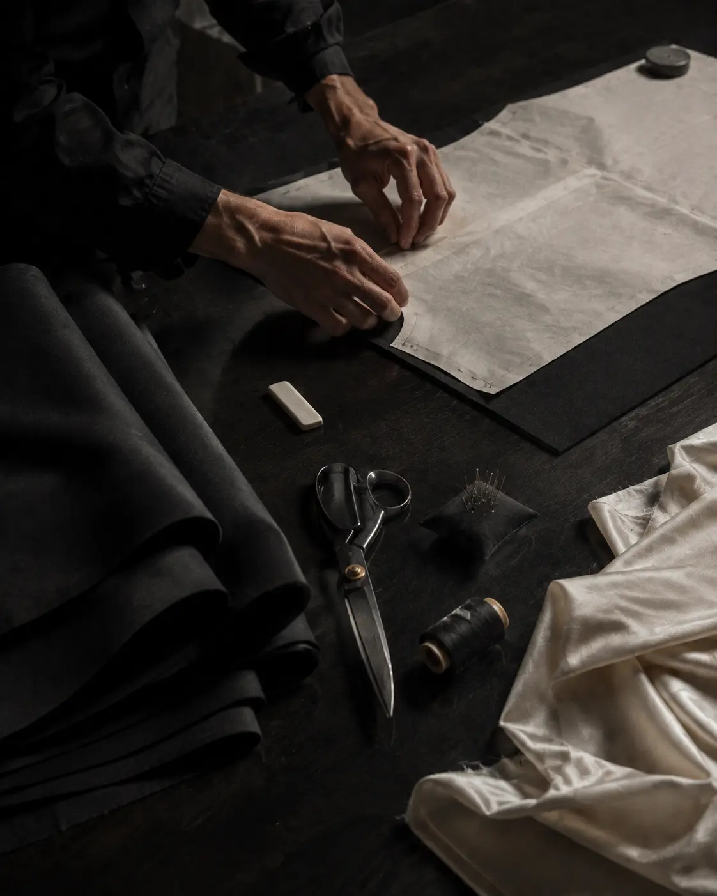

Cut.
Volume is established on the body before the pattern is resolved on paper.

Atelier / Paris
Every edition begins with proportion on the body, then moves through pattern, cloth, and finish. The garment should remain quiet enough to keep revealing itself.
The work
Volume is established on the body before the pattern is resolved on paper.
Balance, line, and movement are adjusted in fittings rather than corrected with surface detail.
Hand work is concentrated where it changes drape, durability, or the feel of the garment in use.
The aim is not minimalism. It is concentration.
Aftercare
Client services can advise on alterations, repair, pressing, storage, and restoration before any work is scheduled.